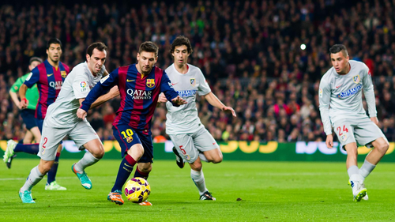
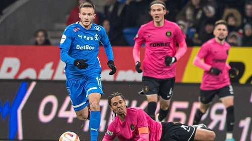
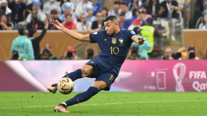

Футбол
Футбол — командный вид спорта, в котором целью является забить мяч в ворота соперника ногами или другими частями тела (кроме рук) большее количество раз, чем команда соперника.
ㅤ
Футбол – это удивительный спорт, который объединяет миллионы людей по всему миру. Невозможно не восхищаться энергией и страстью, которые сопровождают каждый матч.
Это искусство командной игры, где каждый игрок важен, и взаимодействие между ними создает невероятные моменты.
ㅤ
Футбол способен вызывать широкий спектр эмоций – от радости и восторга до разочарования и напряжения.
Наблюдать за тем, как команды борются за победу на поле, наполняет нас азартом и дает удивительные моменты, которые запоминаются на долгое время.
ㅤ
Этот спорт также стимулирует здоровый образ жизни и физическую активность. Футбол развивает навыки координации, выносливости и тактического мышления.
Болеть за любимую команду на стадионе или вместе с друзьями перед телевизором – это не просто событие, а настоящее погружение в атмосферу соперничества и спортивного духа.
  ㅤ
Футбол также служит мощным инструментом для культурного обмена и объединения различных сообществ.
ㅤ
Мировые чемпионаты и клубные турниры привлекают внимание болельщиков со всех уголков планеты, создавая уникальное чувство единства и солидарности.
ㅤ
Футбольные звезды также играют ключевую роль в формировании образа спорта.
Их навыки, стойкость и преданность вызывают восхищение и вдохновляют миллионы молодых поклонников.
ㅤ
Футбол стал платформой для выдающихся личностей, способных внести вклад не только на поле, но и в общество.
Кроме того, футбол часто является поводом для создания невероятных историй, будь то неожиданные победы аутсайдеров,
ㅤ
эпические восхождения клубов или героические моменты в карьере игроков.
ㅤ
Эти истории делают футбол увлекательным и непредсказуемым, оставляя след в сердцах болельщиков.
ㅤ
ㅤ